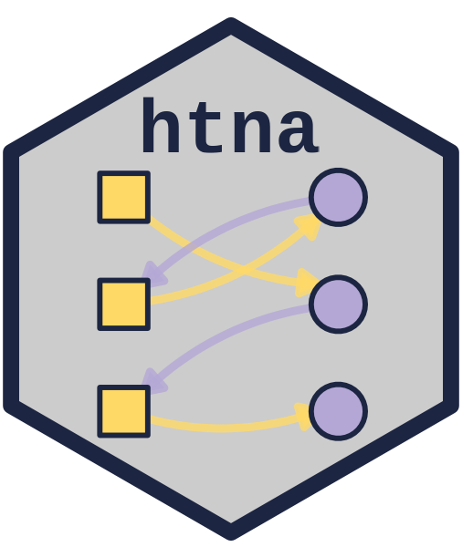

Edge-Weight Case-Dropping Stability
Source:R/casedrop_reliability_htna.R
casedrop_reliability_htna.Rdhtna-named alias of Nestimate::casedrop_reliability(). Computes
the CS-coefficient for the edge-weight vector of a network: the
maximum proportion of cases (rows of x$data) that can be dropped
while the flattened edge-weight vector of the re-estimated network
still correlates with the original above threshold in at least
certainty of iterations.
Arguments
- x
A
net_casedrop_reliability_groupobject.- iter
Integer. Iterations per drop proportion. Default
1000.- drop_prop
Drop proportion at which to report the four metrics (mean +/- sd per network). Default
0.7.- threshold
Numeric in
[0, 1]. Minimum edge-vector correlation for an iteration to count as stable. Default0.7.- certainty
Numeric in
[0, 1]. Required fraction of iterations whose correlation must exceedthresholdfor a drop proportion to qualify. Default0.95.- method
Correlation method:
"pearson"(weight magnitudes),"spearman"(ranks, robust to scale), or"kendall". Default"spearman"because edge weights often span several orders of magnitude and rank stability is the typical target.- include_diag
Logical. Include diagonal (self-loop) edges in the edge vector. Default
FALSE.- seed
Optional integer for reproducibility.
Value
An object of class net_casedrop_reliability (single
network) or net_casedrop_reliability_group (grouped htna). See
Nestimate::casedrop_reliability() for the full component list
and the corresponding plot() method.
Details
Works on htna networks and grouped htna networks directly.
Suffixed _htna to avoid clashing with
Nestimate::casedrop_reliability() when both packages are loaded.
Examples
# \donttest{
data(human_long, ai_long, package = "Nestimate")
net <- build_htna(list(Human = human_long, AI = ai_long))
#> Warning: A network with one long sequence is not recommended and can't be validated using bootstrap and other confirmatory testings.
#> Metadata aggregated per session: ties resolved by first occurrence in 'session_date' (1 sessions), 'cluster' (42 sessions)
casedrop_reliability_htna(net, iter = 50, seed = 1)
#> Edge-weight Case-dropping Stability
#> Cases (rows of $data) : 429
#> Edges assessed : 272 (diagonal excluded)
#> Iterations / prop : 50
#> Correlation method : spearman
#> CS-coefficient (r) : 0.90 (threshold=0.70, certainty=0.95)
#>
#> Model-level reliability across iterations (mean +/- sd per drop):
#> drop_prop p=0.1 p=0.2 p=0.3 p=0.4 p=0.5 p=0.6 p=0.7 p=0.8 p=0.9
#> mean|diff| 0.002+- 0.000 0.003+- 0.000 0.004+- 0.000 0.005+- 0.000 0.006+- 0.001 0.008+- 0.001 0.010+- 0.001 0.013+- 0.001 0.019+- 0.002
#> MAD 0.001+- 0.000 0.002+- 0.000 0.002+- 0.000 0.003+- 0.000 0.003+- 0.000 0.004+- 0.000 0.005+- 0.001 0.007+- 0.001 0.010+- 0.001
#> cor 0.998+- 0.001 0.994+- 0.002 0.990+- 0.003 0.986+- 0.004 0.979+- 0.005 0.967+- 0.006 0.951+- 0.010 0.922+- 0.013 0.861+- 0.024
#> max|diff| 0.022+- 0.006 0.033+- 0.009 0.042+- 0.013 0.057+- 0.016 0.062+- 0.019 0.085+- 0.029 0.097+- 0.030 0.153+- 0.059 0.229+- 0.137
# }